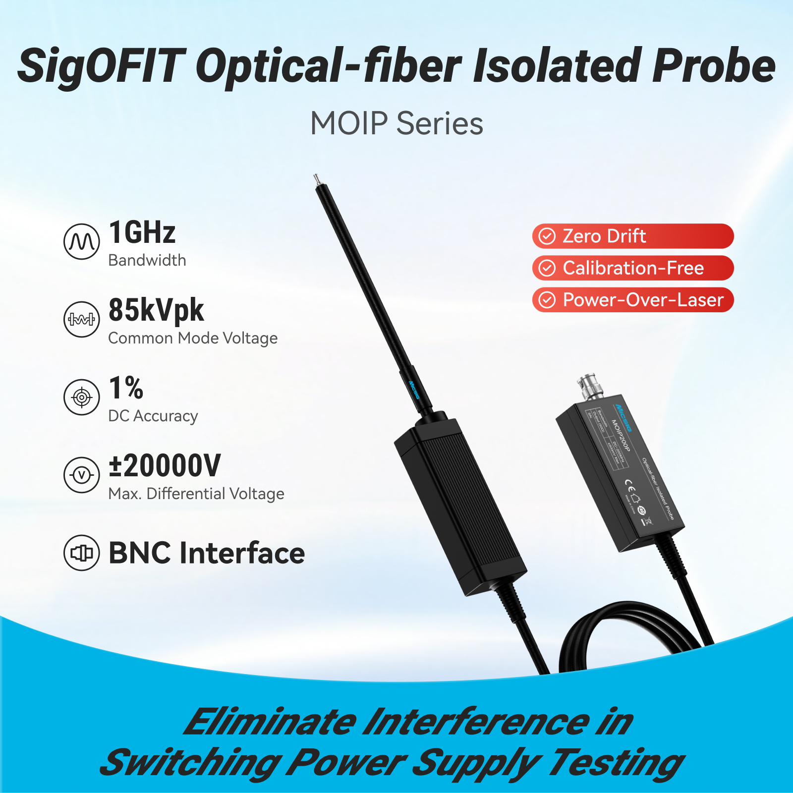

Micsig product information · India
Micsig SigOFIT Gen 3 Optical Isolated Probe
Micsig SigOFIT Gen 3 MOIP probes use optical isolation for differential measurement in high-common-mode environments. The Gen 3 brochure lists model bandwidths from 200 MHz to 1.2 GHz and measurement ranges that depend on the selected attenuator.
Ask about this product
Key specifications
Models / bandwidthMOIP200P 200 MHz; 350P 350 MHz; 500P 500 MHz; 1000P 1 GHz; 1200P 1.2 GHz
Differential rangeUp to ±20 kV with compatible attenuators
Common-mode rangeUp to 85 kV
CMRRUp to 128 dB at 100 MHz; 106 dB at 1.2 GHz
Noise<0.45 mVrms; MOIP1200P lists <0.3 mVrms
Fiber / output2 m customizable fiber / universal BNC
Applications
The supplied brochure describes use in high-speed power electronics and SiC/GaN semiconductor testing.
Specifications and configurations vary by model. Confirm the exact model and its operating limits in the linked Micsig PDF before selection.
Open Micsig datasheet / brochure Compare the Optically isolated probes category →
Product enquiries in India
Vianova Industrial Solutions is an authorised Micsig distributor for India. Contact the Ghaziabad team for model selection, current availability and quotations.